Wady zgryzu
Podział wad na trzy klasy
Klasa I
Prawidłowa pozycja zębów bocznych górnych w stosunku do zębów bocznych dolnych.
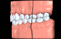
I klasa Angle’a z prawidłową pozycją zębów przednich
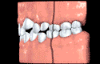
I klasa Angle’a z prawidłową pozycją zębów przednich
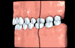
I klasa Angle’a z prawidłową pozycją zębów przednich
Klasa II
Klasa II występuje w wyniku cofnięcia zębów dolnych bocznych w stosunku do zębów górnych bocznych (stosunek pierwszych trzonowców). Często występuje wysunięcie zębów przednich górnych, a także szczęki górnej lub też ich przechylenie. Wady
klasy II dotyczą niedoboru wzrostu dolnej szczęki lub też nadmiernego wzrostu górnej szczęki albo kombinacji wyżej wymienionych.
Najczęściej profil pacjenta jest wypukły z cofnięciem wargi dolnej oraz bródki. W wielu przypadkach wady klasy II są dziedziczone i/lub występują w wyniku działania czynników zewnętrznych tj. ssania palców. Wady klasy II powinny być leczone
w okresie wzrostu pacjentów, aby umożliwić wzrost doprzedni żuchwy.
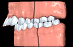
Klasa II z wychyleniem siekaczy górnych
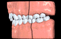
Klasa II z przechyleniem siekaczy górnych
Klasa III
Klasa III występuje w wyniku wysunięcia zębów bocznych dolnych w stosunku do zębów bocznych górnych (stosunek pierwszych trzonowców).
Wady klasy III występują w wyniku nadmiernego wzrostu żuchwy lub niedoboru wzrostu szczęki lub też kombinacji wyżej wymienionych. U pacjentów występuje profil wklęsły z dominującą bródką oraz wysuniętą wargą dolną. Wady klasy III często mogą
być dziedziczone.
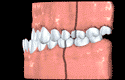
Klasa III szkieletowa
Klasyfikacja uwzględniająca profil tkanek miękkich
Klasyfikując wady zgryzu powinniśmy brać pod uwagę nie tylko pozycję zębów, ale również profil tkanek miękkich. Poniżej przedstawiamy możliwe przykłady leczenia biorąc pod uwagę pozycję zębów oraz profil tkanek miękkich.
Klasa I
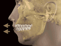
Protruzja zębów górnych i dolnych: W przypadku znacznego wychylenia zębów górnych i dolnych oraz znacznego stopnia wysunięcia wargi górnej i dolnej najczęściej stosujemy leczenie tzw. ekstrakcyjne (usuwanie zębów)
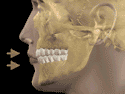
Retruzja zębów górnych i dolnych: W przypadku znacznego przechylenia zębów górnych i dolnych oraz znacznego stopnia cofnięcia wargi górnej i dolnej najczęściej stosujemy leczenie tzw. bezekstrakcyjne (bez usuwania zębów)
Klasa II
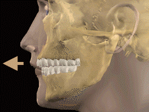
Protruzja zębów górnych: W tym przypadku dla poprawy warunków zgryzowych oraz poprawy profilu tkanek miękkich powinniśmy wziąć pod uwagę ekstrakcę zębów
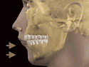
Cofnięcie żuchwy wraz z zębami dolnymi: W tym przypadku wskutek niedoboru wzrostu żuchwy pacjenci powinni być leczeni w okresie wzrostu dla uzyskania najlepszego efektu
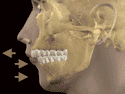
Cofnięcie żuchwy wraz z zębami dolnymi oraz protruzją zębów górnych: W większości przypadków ta szkieletowa wada zgryzu wymaga leczenia ortodontyczno-chirurgicznego
Klasa III
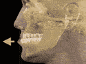
Protruzja zębów dolnych: Najczęściej w takich przypadkach ekstrakcje w łuku dolnym okazują się skutecznym sposobem leczenia
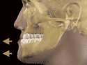
Wysunięcie żychwy (progenia): Ta szkieletowa wada zgryzu wymaga leczenia ortodontyczno-chirurgicznego